Examples: estimate_infections()
Source:vignettes/estimate_infections_options.Rmd
estimate_infections_options.RmdThe estimate_infections() function encodes a range of
different model options. In this vignette we apply some of these to the
example data provided with the EpiNow2 package, highlighting
differences in inference results and run times. It is not meant as a
comprehensive exploration of all the functionality in the package, but
intended to give users a flavour of the kind of model options that exist
for reproduction number estimation and forecasting within the package,
and the differences in computational speed between them. For
mathematical detail on the model please consult the model definition vignette, and for a
more general description of the use of the function, the estimate_infections
workflow vignette.
Set up
We first load the EpiNow2 package and also the rstan package that we will use later to show the differences in run times between different model options.
library("EpiNow2")
library("rstan")
#> Loading required package: StanHeaders
#>
#> rstan version 2.33.1.9000 (Stan version 2.33.0)
#> For execution on a local, multicore CPU with excess RAM we recommend calling
#> options(mc.cores = parallel::detectCores()).
#> To avoid recompilation of unchanged Stan programs, we recommend calling
#> rstan_options(auto_write = TRUE)
#> For within-chain threading using `reduce_sum()` or `map_rect()` Stan functions,
#> change `threads_per_chain` option:
#> rstan_options(threads_per_chain = 1)In this examples we set the number of cores to use to 4 but the optimal value here will depend on the computing resources available.
options(mc.cores = 4)Data
We will use an example data set that is included in the package, representing an outbreak of COVID-19 with an initial rapid increase followed by decreasing incidence.
library("ggplot2")
reported_cases <- example_confirmed[1:60]
ggplot(reported_cases, aes(x = date, y = confirm)) +
geom_col() +
theme_minimal() +
xlab("Date") +
ylab("Cases")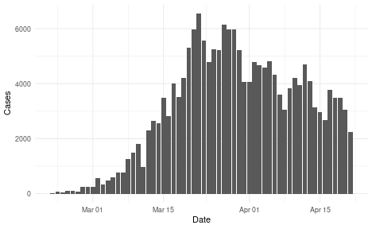
plot of chunk data
Parameters
Before running the model we need to decide on some parameter values, in particular any delays, the generation time, and a prior on the initial reproduction number.
Delays: incubation period and reporting delay
Delays reflect the time that passes between infection and reporting, if these exist. In this example, we assume two delays, an incubation period (i.e. delay from infection to symptom onset) and a reporting delay (i.e. the delay from symptom onset to being recorded as a symptomatic case). These delays are usually not the same for everyone and are instead characterised by a distribution. For the incubation period we use an example from the literature that is included in the package.
example_incubation_period
#>
#> Uncertain lognormal distribution with (untruncated) logmean 1.6 (SD 0.064) and logSD 0.42 (SD 0.069)For the reporting delay, we use a lognormal distribution with mean of
2 days and standard deviation of 1 day. Note that the mean and standard
deviation must be converted to the log scale, which can be done using
the convert_log_logmean() function.
reporting_delay <- dist_spec(
mean = convert_to_logmean(2, 1), mean_sd = 0,
sd = convert_to_logsd(2, 1), sd_sd = 0, max = 10
)
#> Warning: The meaning of the 'max' argument has changed compared to previous versions. It now indicates the maximum of a distribution rather than the length of the probability mass function (including 0) that it represented previously. To replicate previous behaviour reduce max by 1.
#> This warning is displayed once every 8 hours.
reporting_delay
#>
#> Fixed distribution with PMF [0.11 0.48 0.27 0.093 0.029 0.0096 0.0033 0.0012 0.00045 0.00018 7.4e-05]EpiNow2 provides a feature that allows us to combine these delays into one by summing them up
delay <- example_incubation_period + reporting_delay
delay
#>
#> Combination of delay distributions:
#> Uncertain lognormal distribution with (untruncated) logmean 1.6 (SD 0.064) and logSD 0.42 (SD 0.069)
#> Fixed distribution with PMF [0.11 0.48 0.27 0.093 0.029 0.0096 0.0033 0.0012 0.00045 0.00018 7.4e-05]Generation time
If we want to estimate the reproduction number we need to provide a distribution of generation times. Here again we use an example from the literature that is included with the package.
example_generation_time
#>
#> Uncertain gamma distribution with (untruncated) mean 3.6 (SD 0.71) and SD 3.1 (SD 0.77)Initial reproduction number
Lastly we need to choose a prior for the initial value of the reproduction number. This is assumed by the model to be normally distributed and we can set the mean and the standard deviation. We decide to set the mean to 2 and the standard deviation to 1.
rt_prior <- list(mean = 2, sd = 0.1)Running the model
We are now ready to run the model and will in the following show a number of possible options for doing so.
Default options
By default the model uses a renewal equation for infections and a Gaussian Process prior for the reproduction number. Putting all the data and parameters together and tweaking the Gaussian Process to have a shorter length scale prior than the default we run.
def <- estimate_infections(reported_cases,
generation_time = generation_time_opts(example_generation_time),
delays = delay_opts(delay),
rt = rt_opts(prior = rt_prior)
)
#> Warning: There were 7 divergent transitions after warmup. See
#> https://mc-stan.org/misc/warnings.html#divergent-transitions-after-warmup
#> to find out why this is a problem and how to eliminate them.
#> Warning: Examine the pairs() plot to diagnose sampling problems
# summarise results
summary(def)
#> measure estimate
#> 1: New confirmed cases by infection date 2326 (1160 -- 4361)
#> 2: Expected change in daily cases Likely decreasing
#> 3: Effective reproduction no. 0.89 (0.62 -- 1.2)
#> 4: Rate of growth -0.024 (-0.094 -- 0.036)
#> 5: Doubling/halving time (days) -29 (19 -- -7.4)
# elapsed time (in seconds)
get_elapsed_time(def$fit)
#> warmup sample
#> chain:1 33.573 24.459
#> chain:2 27.082 34.938
#> chain:3 34.183 24.497
#> chain:4 30.027 31.835
# summary plot
plot(def)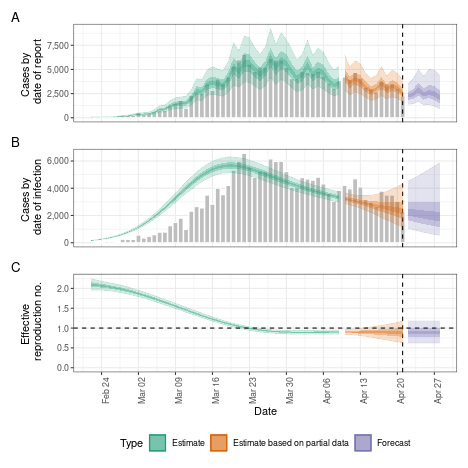
plot of chunk default
Reducing the accuracy of the approximate Gaussian Process
To speed up the calculation of the Gaussian Process we could decrease its accuracy, e.g. decrease the proportion of time points to use as basis functions from the default of 0.2 to 0.1.
agp <- estimate_infections(reported_cases,
generation_time = generation_time_opts(example_generation_time),
delays = delay_opts(delay),
rt = rt_opts(prior = rt_prior),
gp = gp_opts(basis_prop = 0.1)
)
#> Warning: There were 8 divergent transitions after warmup. See
#> https://mc-stan.org/misc/warnings.html#divergent-transitions-after-warmup
#> to find out why this is a problem and how to eliminate them.
#> Warning: Examine the pairs() plot to diagnose sampling problems
# summarise results
summary(agp)
#> measure estimate
#> 1: New confirmed cases by infection date 2343 (1188 -- 4363)
#> 2: Expected change in daily cases Likely decreasing
#> 3: Effective reproduction no. 0.89 (0.63 -- 1.2)
#> 4: Rate of growth -0.024 (-0.091 -- 0.039)
#> 5: Doubling/halving time (days) -29 (18 -- -7.6)
# elapsed time (in seconds)
get_elapsed_time(agp$fit)
#> warmup sample
#> chain:1 23.392 23.266
#> chain:2 18.817 23.019
#> chain:3 19.906 23.454
#> chain:4 27.043 23.983
# summary plot
plot(agp)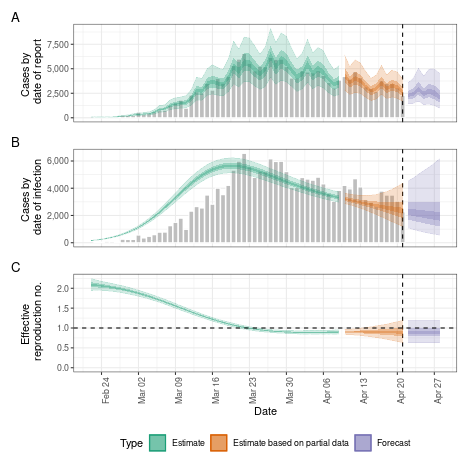
plot of chunk lower_accuracy
Adjusting for future susceptible depletion
We might want to adjust for future susceptible depletion. Here, we do so by setting the population to 1000000 and projecting the reproduction number from the latest estimate (rather than the default, which fixes the reproduction number to an earlier time point based on the given reporting delays). Note that this only affects the forecasts and is done using a crude adjustment (see the model definition).
dep <- estimate_infections(reported_cases,
generation_time = generation_time_opts(example_generation_time),
delays = delay_opts(delay),
rt = rt_opts(
prior = rt_prior,
pop = 1000000, future = "latest"
)
)
#> Warning: There were 14 divergent transitions after warmup. See
#> https://mc-stan.org/misc/warnings.html#divergent-transitions-after-warmup
#> to find out why this is a problem and how to eliminate them.
#> Warning: Examine the pairs() plot to diagnose sampling problems
# summarise results
summary(dep)
#> measure estimate
#> 1: New confirmed cases by infection date 2275 (1141 -- 4324)
#> 2: Expected change in daily cases Likely decreasing
#> 3: Effective reproduction no. 0.88 (0.62 -- 1.2)
#> 4: Rate of growth -0.027 (-0.096 -- 0.036)
#> 5: Doubling/halving time (days) -26 (19 -- -7.2)
# elapsed time (in seconds)
get_elapsed_time(dep$fit)
#> warmup sample
#> chain:1 30.522 24.801
#> chain:2 29.964 24.931
#> chain:3 33.582 25.698
#> chain:4 27.050 25.586
# summary plot
plot(dep)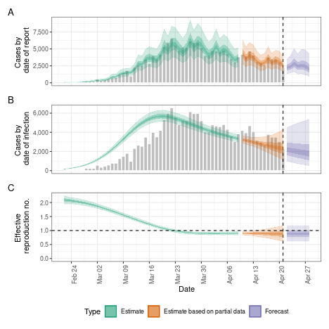
plot of chunk susceptible_depletion
Adjusting for truncation of the most recent data
We might further want to adjust for right-truncation of recent data estimated using the estimate_truncation model. Here, instead of doing so we assume that we know about truncation with mean of 1/2 day, sd 1/2 day, following a lognormal distribution and with a maximum of three days.
trunc_dist <- dist_spec(
mean = convert_to_logmean(0.5, 0.5), mean_sd = 0.1,
sd = convert_to_logsd(0.5, 0.5), sd_sd = 0.1,
max = 3
)We can then use this in the esimtate_infections()
function using the truncation option.
trunc <- estimate_infections(reported_cases,
generation_time = generation_time_opts(example_generation_time),
delays = delay_opts(delay),
truncation = trunc_opts(trunc_dist),
rt = rt_opts(prior = rt_prior)
)
#> Warning: There were 6 divergent transitions after warmup. See
#> https://mc-stan.org/misc/warnings.html#divergent-transitions-after-warmup
#> to find out why this is a problem and how to eliminate them.
#> Warning: Examine the pairs() plot to diagnose sampling problems
# summarise results
summary(trunc)
#> measure estimate
#> 1: New confirmed cases by infection date 2477 (1311 -- 4653)
#> 2: Expected change in daily cases Likely decreasing
#> 3: Effective reproduction no. 0.91 (0.65 -- 1.2)
#> 4: Rate of growth -0.02 (-0.085 -- 0.044)
#> 5: Doubling/halving time (days) -34 (16 -- -8.2)
# elapsed time (in seconds)
get_elapsed_time(trunc$fit)
#> warmup sample
#> chain:1 32.951 25.092
#> chain:2 33.920 25.699
#> chain:3 31.455 46.192
#> chain:4 27.765 26.048
# summary plot
plot(trunc)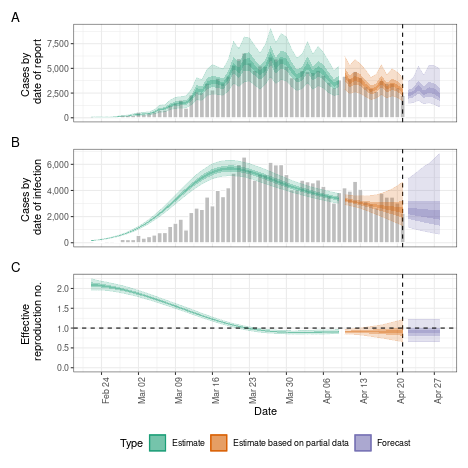
plot of chunk truncation
Projecting the reproduction number with the Gaussian Process
Instead of keeping the reproduction number fixed from a certain time point we might want to extrapolate the Gaussian Process into the future. This will lead to wider uncertainty, and the researcher should check whether this or fixing the reproduction number from an earlier is desirable.
project_rt <- estimate_infections(reported_cases,
generation_time = generation_time_opts(example_generation_time),
delays = delay_opts(delay),
rt = rt_opts(
prior = rt_prior, future = "project"
)
)
#> Warning: There were 4 divergent transitions after warmup. See
#> https://mc-stan.org/misc/warnings.html#divergent-transitions-after-warmup
#> to find out why this is a problem and how to eliminate them.
#> Warning: Examine the pairs() plot to diagnose sampling problems
# summarise results
summary(project_rt)
#> measure estimate
#> 1: New confirmed cases by infection date 2246 (1150 -- 4539)
#> 2: Expected change in daily cases Likely decreasing
#> 3: Effective reproduction no. 0.87 (0.62 -- 1.2)
#> 4: Rate of growth -0.028 (-0.096 -- 0.042)
#> 5: Doubling/halving time (days) -24 (16 -- -7.2)
# elapsed time (in seconds)
get_elapsed_time(project_rt$fit)
#> warmup sample
#> chain:1 28.858 24.636
#> chain:2 36.509 47.931
#> chain:3 32.023 47.087
#> chain:4 34.074 27.767
# summary plot
plot(project_rt)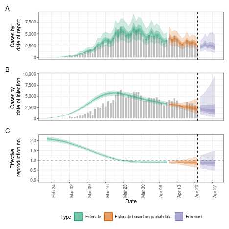
plot of chunk gp_projection
Fixed reproduction number
We might want to estimate a fixed reproduction number, i.e. assume that it does not change.
fixed <- estimate_infections(reported_cases,
generation_time = generation_time_opts(example_generation_time),
delays = delay_opts(delay),
gp = NULL
)
# summarise results
summary(fixed)
#> measure estimate
#> 1: New confirmed cases by infection date 15737 (8930 -- 29454)
#> 2: Expected change in daily cases Increasing
#> 3: Effective reproduction no. 1.2 (1.1 -- 1.3)
#> 4: Rate of growth 0.038 (0.026 -- 0.05)
#> 5: Doubling/halving time (days) 18 (14 -- 27)
# elapsed time (in seconds)
get_elapsed_time(fixed$fit)
#> warmup sample
#> chain:1 2.091 1.127
#> chain:2 1.884 0.847
#> chain:3 1.912 0.981
#> chain:4 1.857 0.900
# summary plot
plot(fixed)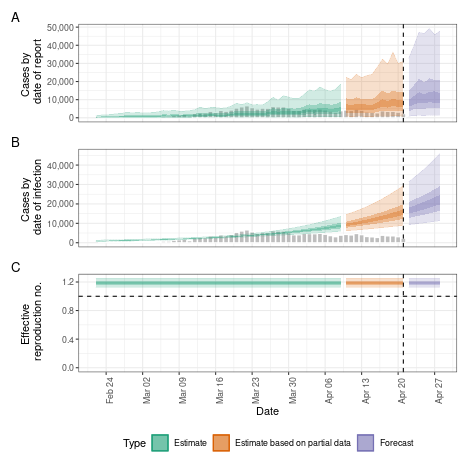
plot of chunk fixed
Breakpoints
Instead of assuming the reproduction number varies freely or is
fixed, we can assume that it is fixed but with breakpoints. This can be
done by adding a breakpoint column to the reported case
data set. e.g. if we think that the reproduction number was constant but
would like to allow it to change on the 16th of March 2020 we would
define a new case data set using
bp_cases <- data.table::copy(reported_cases)
bp_cases <- bp_cases[,
breakpoint := ifelse(date == as.Date("2020-03-16"), 1, 0)
]We then use this instead of reported_cases in the
estimate_infections() function:
bkp <- estimate_infections(bp_cases,
generation_time = generation_time_opts(example_generation_time),
delays = delay_opts(delay),
rt = rt_opts(prior = rt_prior),
gp = NULL
)
# summarise results
summary(bkp)
#> measure estimate
#> 1: New confirmed cases by infection date 2468 (2035 -- 2968)
#> 2: Expected change in daily cases Decreasing
#> 3: Effective reproduction no. 0.91 (0.88 -- 0.93)
#> 4: Rate of growth -0.021 (-0.026 -- -0.015)
#> 5: Doubling/halving time (days) -34 (-46 -- -27)
# elapsed time (in seconds)
get_elapsed_time(bkp$fit)
#> warmup sample
#> chain:1 3.115 2.705
#> chain:2 2.910 2.433
#> chain:3 3.695 2.271
#> chain:4 3.683 2.654
# summary plot
plot(bkp)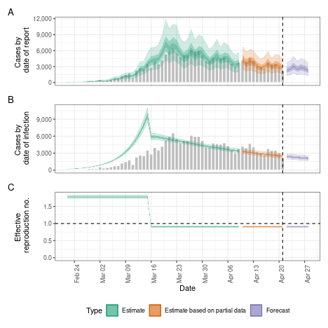
plot of chunk bp
Weekly random walk
Instead of a smooth Gaussian Process we might want the reproduction
number to change step-wise, e.g. every week. This can be achieved using
the rw option which defines the length of the time step in
a random walk that the reproduction number is assumed to follow.
rw <- estimate_infections(reported_cases,
generation_time = generation_time_opts(example_generation_time),
delays = delay_opts(delay),
rt = rt_opts(prior = rt_prior, rw = 7),
gp = NULL
)
# summarise results
summary(rw)
#> measure estimate
#> 1: New confirmed cases by infection date 2168 (1146 -- 4136)
#> 2: Expected change in daily cases Likely decreasing
#> 3: Effective reproduction no. 0.86 (0.63 -- 1.2)
#> 4: Rate of growth -0.031 (-0.091 -- 0.031)
#> 5: Doubling/halving time (days) -22 (22 -- -7.6)
# elapsed time (in seconds)
get_elapsed_time(rw$fit)
#> warmup sample
#> chain:1 7.324 9.414
#> chain:2 9.205 9.808
#> chain:3 8.057 10.079
#> chain:4 6.632 7.324
# summary plot
plot(rw)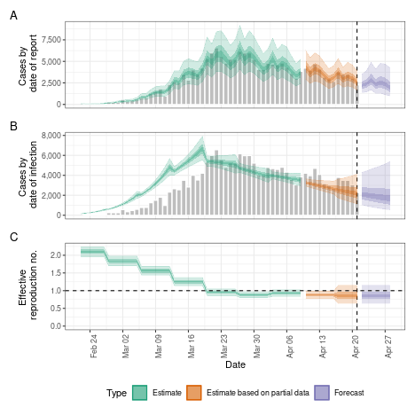
plot of chunk weekly_rw
No delays
Whilst EpiNow2 allows the user to specify delays, it can also run directly on the data as does e.g. the EpiEstim package.
no_delay <- estimate_infections(
reported_cases,
generation_time = generation_time_opts(example_generation_time)
)
#> Warning: There were 5 divergent transitions after warmup. See
#> https://mc-stan.org/misc/warnings.html#divergent-transitions-after-warmup
#> to find out why this is a problem and how to eliminate them.
#> Warning: Examine the pairs() plot to diagnose sampling problems
# summarise results
summary(no_delay)
#> measure estimate
#> 1: New confirmed cases by infection date 2790 (2313 -- 3329)
#> 2: Expected change in daily cases Decreasing
#> 3: Effective reproduction no. 0.88 (0.76 -- 0.99)
#> 4: Rate of growth -0.026 (-0.055 -- -0.0022)
#> 5: Doubling/halving time (days) -26 (-320 -- -13)
# elapsed time (in seconds)
get_elapsed_time(no_delay$fit)
#> warmup sample
#> chain:1 42.446 68.684
#> chain:2 32.455 34.207
#> chain:3 42.812 62.019
#> chain:4 28.186 37.280
# summary plot
plot(no_delay)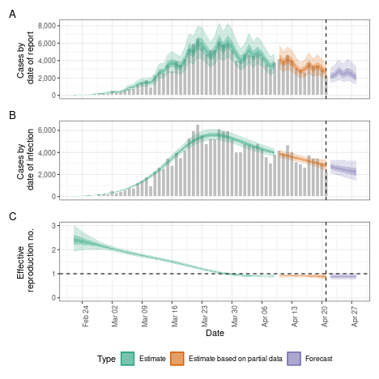
plot of chunk no_delays
Non-parametric infection model
The package also includes a non-parametric infection model. This runs much faster but does not use the renewal equation to generate infections. Because of this none of the options defining the behaviour of the reproduction number are available in this case, limiting user choice and model generality. It also means that the model is questionable for forecasting, which is why were here set the predictive horizon to 0.
non_parametric <- estimate_infections(reported_cases,
generation_time = generation_time_opts(example_generation_time),
delays = delay_opts(delay),
rt = NULL,
backcalc = backcalc_opts(),
horizon = 0
)
# summarise results
summary(non_parametric)
#> measure estimate
#> 1: New confirmed cases by infection date 2361 (1808 -- 3074)
#> 2: Expected change in daily cases Decreasing
#> 3: Effective reproduction no. 0.9 (0.8 -- 0.99)
#> 4: Rate of growth -0.023 (-0.045 -- -0.0014)
#> 5: Doubling/halving time (days) -30 (-510 -- -15)
# elapsed time (in seconds)
get_elapsed_time(non_parametric$fit)
#> warmup sample
#> chain:1 2.811 0.823
#> chain:2 2.688 0.784
#> chain:3 3.013 0.826
#> chain:4 3.280 0.805
# summary plot
plot(non_parametric)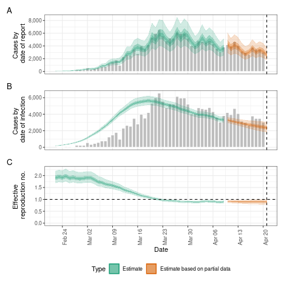
plot of chunk nonparametric